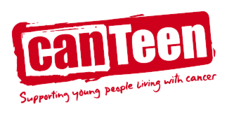

Service Events at HBHS
Blood Drives
Every year at Hamilton Boys’ High School there are two Blood Drives, held in the school hall and organised in conjunction with the NZ Blood Service. This is an opportunity for students to donate blood and help save the lives of those who urgently need it. Students who are aged 16 years or over at the time of donating blood are encouraged to sign up provided they weigh over 50kg and are in good health at the time of donation. Students interested in giving blood are encouraged to pay attention to the school notices so they can sign up to donate.
KidsCan Charity Fun Run
The KidsCan Charity Fun Run is an event held annually on the last day of Term 1. The run starts at school and goes along the banks of the Waikato river before returning to school. Students pay $5 to run and the money goes to KidsCan - a charity that provides essential items such as warm clothing and shoes to New Zealand children living in poverty whose families are unable to afford these items themselves.
The Great Dome Shave
Previously known as Shave for a Cure, this event is held near the end of Term 3 where students and teachers shave their heads to raise money for CanTeen, a charity supporting New Zealand youths living with cancer. Students can donate any amount of money and this is can be given to the school shop or in the hall on the day of the shave. The event takes place in the school hall, where local hairdressers come in and shave the heads of the students and teachers who are participating.